1과목: 기계가공법 및 안전관리
1. 해머 작업시 안전사항으로 적당하지 않은 것은?
2. 총형커터에 의한 방법으로 치형을 절삭할 때 사용하는 밀링커터는?
3. 드릴의 속도 V(m/min), 지름 d(mm)일 때, 드릴의 회전수 n(rpm)을 구하는 식은?
4. 선반에서 맨드릴(mandrel)을 사용하는 가장 큰 이유는?
5. 삼침법에 의해 수나사의 유효지름을 측정할 때, 사용되는 마이크로 미터는?
6. 선반바이트를 구조에 따라 분류할 때 생크에서 날(인선)부분에만 초경합금이나 용접이 가능한 바이트용 재질을 용접하여 사용하는 것은?
7. 호빙 머신의 이송에 대한 설명 중 맞는 것은?
8. 연삭숫돌의 연삭조건과 입도(grain size)의 관계를 옳게 표시한 것은?
9. 대형의 공작물이나 불규칙한 가공물을 가공하기 편리하도록 척을 지면 위에 수직으로 설치하여 가공물의 장착이나 탈착이 편리하며 공구이송방향이 보통선반과 다른 선반은?
10. 삼각함수에 의하여 각도를 길이로 계산하여 간접적으로 각도를 구하는 방법으로 블록 게이지와 함께 사용하여 구하는 측정기는?
11. 밀링가공 작업중에 갑자기 정전되었을 때, 안전사항으로 가장 거리가 먼 것은?
12. 회전하는 상자에 공작물과 숫돌입자, 공작액, 컴파운드 등을 함께 넣어 공작물이 입자와 충돌하는 동안에 그 표면의 요철()을 제거하여 매끈한 가공면을 얻는 것은?
13. 절삭공구 재료의 구비조건으로 틀린 것은?
14. 센터리스 연삭기에서 통과이송법으로 가공시 조정숫돌 바퀴의 바깥 지름이 400mm, 조정 숫돌바퀴의 회전수가 30rpm, 경사각이 4°일 때, 가공물의 이송 속도는 약 몇 m/min 인가?
15. 드릴 각부의 명칭에서 드릴의 홈을 따라서 만들어진 좁은 날이며, 드릴을 안내하는 역할을 하는 것은?
16. 선반작업 안전수칙으로 틀린 것은?
17. 모(毛), 면직물, 펠트 등을 여러 장 겹쳐서 적당한 두께의 원판을 만든 다음 이것을 회전시키고 여기에 미세한 연삭 입자가 혼합된 윤활제를 사용하여 공작물의 표면을 매끈하고 광택나게 하는 것은?
18. 다음 중 급속 귀환장치가 있는 기계는?
19. 수직 밀링머신에서 가공물의 홈과 좁은 평면, 윤곽가공, 구멍가공 등에는 일반적으로 다음 중 어떤 절삭 공구를 주로 많이 사용 하는가?
20. 센터나 척을 사용하지 않고 일강의 바깥원통면을 연삭하는 센터리스 연삭기의 장점이 아닌 것은?
2과목: 기계설계 및 기계재료
21. 고주파경화법의 설명으로 틀린 것은?
22. 켈밋(Kelmet)은 Cu에 무엇을 첨가한 합금인가?
23. 배빗 메탈(babbit metal)의 주성분은?
24. 다음 중 고속도강과 가장 관계가 먼 사항은?
25. 스테인레스 강을 금속 조직학상으로 분류한 것이 아닌 것은?
26. 강과 주철은 어느 것을 기준으로 하여 구분하는가?
27. 다음 중에서 금속의 비중이 큰 순서로 올바르게 나열된 것은?
28. 탄소강이 가열되어 200~300℃ 부근에서 상온일 때보다 인성이 저하되는 현상을 무엇이라고 하는가?
29. 재결정 온도보다 낮은 온도에서 가공하는 것을 무엇이라고 하는가?
30. 복합재료 중 FRP는 무엇을 말하는가?
31. 회전수가 3000rpm일 때 전달력이 5PS인 둥근축의 비틀림 모멘트는 약 몇 kgf-mm인가?
32. 구조는 간단하나 복잡한 운동을 수비게 실철할 수 있어, 내연 기관의 밸브 개폐기구나 공작 기계, 인쇄 기계, 자동 기계 등의 운동 변환 기구에 사용되는 것은?
33. 그림과 같은 기어열에서 각각의 잇수가 ZA=16, ZB=60, ZC=12, ZD=64인 경우 A 기어가 있는 I축이 1500rpm 일 때 D 기어가 있는 Ⅲ축의 회전수는 얼마인가?
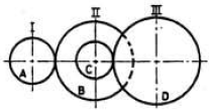
34. M18×2의 미터 기는 나사의 치수를 설명한 것으로 맞는 것은?
35. 모듈 2, 피치원 지름 60mm 인 스퍼 기어의 잇수는?
36. 성크 키(b×h×ℓ)를 지름 d인 전동 축에 사용할 때 키으 ㅣ전단저항으로 토크를 전달한다고 하면 키의 폭(b)를 결정하는 식은? (단, 키와 축의 허용 전단 응력은 동이하고, 키의 높이는 h 이고, 키의 길이는 ℓ=1.5d이다.)
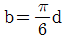
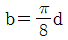
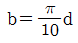
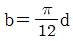
37. 재료의 기준강도(인장강도)가 40kgf/mm2이고, 허용응력이 10kgf/mm2일 떄 안전율은?
38. 키의 설계에서 전달동력 3kW, 회전수 300rpm, 축 지름 30mm, 키의 길이 40mm, 허용전단응력을 3kgf/mm2라 할 때 키의 폭은 약 얼마인가?
39. 일반적으로 60mm 이하의 작은 축과 테이퍼 축에 사용될 때 키(key)가 자동적으로 축과 보스 사이에서 자리를 잡을 수 있는 장점을 가지고 있는 키는?(오류 신고가 접수된 문제입니다. 반드시 정답과 해설을 확인하시기 바랍니다.)
40. 계속하여 반복 작용하는 하중으로서 진폭이 일정하고 주기가 규칙적인 하중은?
3과목: 컴퓨터응용가공
41.
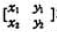
가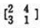
인 직선을 x방향으로 -1, y방향으로 3만큼 이동시킨 결과는?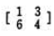
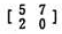
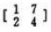
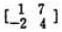
42. 5축 가공과 관련이 없는 것은?
43. 다음 중 Bezier 곡선의 특징으로 맞지 않는 것은?
44. 다음은 솔리드 모델링 기법에 의한 물체의 표현방식 중 CSG(Constructiv Solid Geometry)방식이 B-rap(Boundary Representation)에 비해 우수한 점을 설명한 것 중 틀린 것은?
45. 다음은 2차원에서 동차좌표에 의한 변환행렬을 나타낸 것이다. 평행 이동에 관계되는 것은?
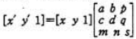
46. 포스트 프로세서의 작업 내용은?
47. 다음 중 중앙처리장치(CPU)의 구성요소인 것은?
48. 금형제품의 성형부 가공에서 곡면의 일부분을 NC가공 하고자 가공영역을 지정하는데 다음 중 가공영역 지정 방식이 아는 것은?
49. CSG(constructive solid geometry)모델링에 사용되는 프리미티브(primitive)로 적합하지 않은 것은?
50. 서피스 모델에 관한 설명 중 틀린 것은?
51. 다음과 같은 형태의 반지름 R인 원의 함수식을 올바르게 설명한 것은?
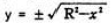
52. 방정식 ax + by + c = 0 으로 표현 가능한 항목은?
53. 다음 중 r(θ)=5cosθi+5sinθj+(θ/π)k에 대하여 θ=0에서의 접선의 방정식은?
54. 다음 중 복사기와 같은 기능에 의하여 복사된 도면 자료를 컴퓨터의 디스크에 보관, 관리할 수 있도록 하는 입력장치는?
55. 2차원상의 한점 P=[x, y, 1]을 회전하기 위해 곱해지는 3×3동차 변환행렬의 형태로서 알맞은것은?
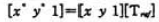
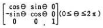
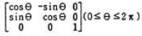
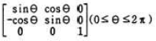
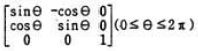
56. 다음 모델링 기법 중에서 Hidden line(숨은선)표현이 불가능한 모델링 기법은?
57. CAD시스템의 하드웨어 중에서 마이크로 필름에 출력할 수 있는 장치는?
58. 3차원에서 변환행렬(4*4)은 크게 4부분으로 나누어진다. 다음 설명 중 틀린 것은?
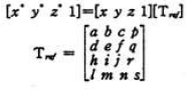
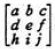
은 회전(rotation), 반전(reflection)등을 나타낸다.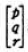
은 투사(projection)를 나타낸다.59. 다음 곡선들 중에서 원추단면 곡선(conic section curve)이 아닌 것은?
60. 가벼우면서도 적은 부피를 가지는 평판 디스플레이의 종류가 아닌 것은?
4과목: 기계제도 및 CNC공작법
61. 조립되는 구멍의 치수가
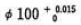
이고, 축의 치수가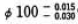
인 끼워 맞춤에서 최대 틈새는?62. 물체를 평면위에 펼쳐 그린 것을 무엇이라 하는가?
63. 다음 중 일반적인 스케치 법이 아닌 것은?
64. 다음 중 리벳의 길이를 머리부분까지 표시하는 리벳은?
65. 보기 입체도를 화살표 방향에서 투상한 투상도로 가장 적합한 것은?
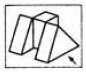
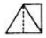
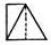
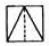
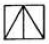
66. 핸들이나 바퀴 등의 암 및 림, 리브 등의 절단선의 연장선 위에 90° 회전하여 실선으로 그리는 단면도는?
67. 도면에 기입된 치수는 어떤 치수를 나타내는가?
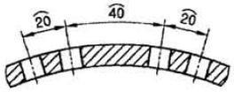
68. 가공방법의 약호중에서 래핑가공을 나타낸 것은?
69. KS 규격에 따른 회 주철의 재료 기호는?
70. 보기 입체도에서 화살표 방향이 정면일 때 평면도로 가장 적합한 것은?
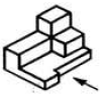
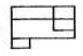
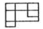
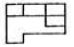
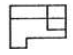
71. CNC 서보 기구에서 0.001mm를 기본 이송 단위(BLU : Basic Length Unit)로 하고 지령펄스가 1000pulse/sec로 전달되고 있다면 테이블의 이송속도는 몇 mm/min 인가?
72. CNC선반 프로그램의 주요기능 중 주축의 회전속도를 지령하는 주축기능은?
73. 머시닝센터의 특징을 설명한 것 중 해당하지 않는 것은?
74. CNC 프로그램을 위한 준비기능(G기능) 가운데 연속 유효 지령 코드(modal G code)만으로 짝지어진 것은?
75. 선반 외경용 틀 홀더 규격에서 밑줄 친 25가 나타내는 의미는 무엇인가?
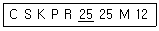
76. CNC공작기계에서 각 축의 이송 정밀도를 높이기 위하여 사용하는 나사는?
77. 머시닝센터로 가공할 때 다음 그림의 각 경로별 지령방법으로 옳은 것은?
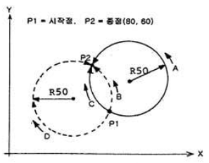
78. 와이어 컷 방전가공에서 절연액(가공액)으로 물을 사용할 때의 장점이 아닌 것은?
79. CNC공작기계를 사용하는 작업자의 일반 상항 중 잘못 된 것은?
80. 보기의 CNC선반 프로그램에서 Q_ 또는 K_는 무엇을 뜻하는가?
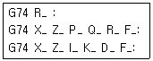